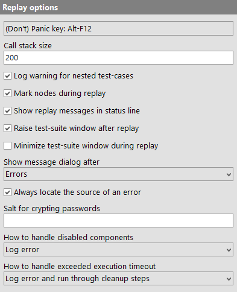
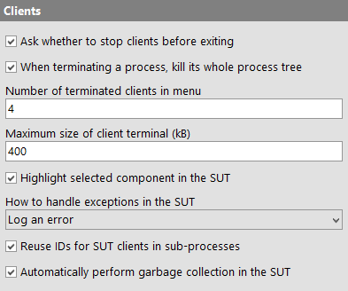
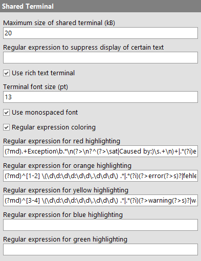
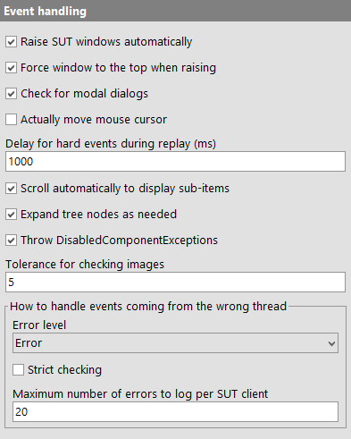
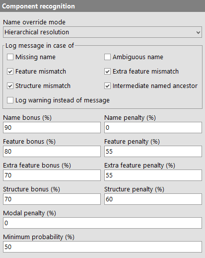
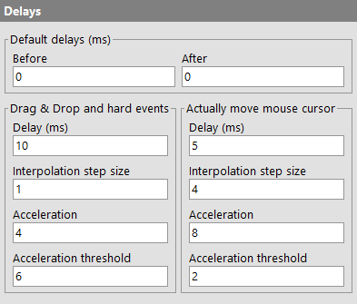
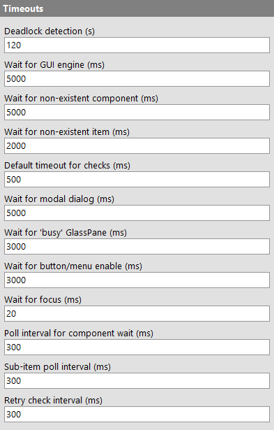
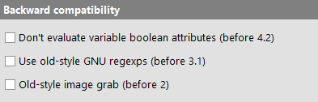

| Version 6.0.3 |
The following settings change the way test-suites are executed.
|
|  | ||
|
| Figure 37.19: Replay options | ||
When running a test at full speed it can be rather difficult to get the focus to QF-Test's window and interrupt the test so you can do something different without having all these windows flashing around the screen. This is all the more true when the options Actually move mouse cursor or Raise SUT windows automatically are activated or when running in batch mode.
This option lets you define a key combination (the default being [Alt-F12]) that will instantly pause all running tests if it is pressed in any SUT or QF-Test window (unless multiple QF-Test instances are run simultaneously, of course). Pressing the same key combination again will resume all tests, unless you manually resume or stop any of them. In that case its effect is automatically reset to suspend tests.
To set a hotkey, click into the field and press the desired key combination.
The call stack size is a limit for the nesting depth of
'Sequences' or 'Procedure calls' during replay. This
limit is needed to detect and handle endless recursion. When the
nesting depth exceeds the call stack size, a
StackOverflowException is thrown. The default value of 200 should be
sufficient but can be increased for very complex tests.
Execution of 'Test-case' nodes should not be nested because such 'Test-cases' cannot be listed properly in the report. If this option is active, a warning is logged in case a 'Test-case' is executed within another 'Test-case'.
If set, tree nodes that are currently executed are marked with an arrow.
Determines whether the name of the currently executing node is shown in the status line.
This option is mainly used together with the option Raise SUT windows automatically. It causes the window of a test-suite to be raised after a test run.
See also option Force window to the top when raising.
If this option is set, QF-Test will minimize the window of a test-suite while its tests are being executed. The window will pop back up automatically when the test is stopped or suspended. This feature is especially useful on Windows 2000/XP systems where programs are prohibited from bringing their windows to the top so QF-Test cannot raise the windows of the SUT.
After replay is finished, the status line shows the number of errors and warnings that occurred. If an uncaught exception was thrown, an error dialog is displayed. Additionally, a message dialog can be displayed in case of warnings or errors or every time a run is finished. This option sets the minimum error level that triggers such a message dialog.
When an exception is thrown during replay, the node that caused the exception will be made visible and selected. If you don't like this, you can turn this feature off and locate the node via the »Run«-»Find last error source...« menu item instead.
QF-Test can store encrypted passwords in the 'Text' attribute of a 'Text input' node for a password field or the 'Detail' attribute of a 'Selection' used for a login dialog in a web SUT. When such passwords are en- or decrypted, QF-Test combines the key with the salt specified in this option. Without this salt, anybody with sufficient knowledge is able to decrypt your passwords to get the plain-text version.
Note Don't let this option give you a false sense of security. Anybody that gains access to this salt and anybody that can execute your tests can also gain access to the plain-text version of the password. However, encrypting passwords is still useful to prevent obvious plain-text passwords getting stored in test-suites and run-logs, and encrypted passwords are reasonably safe from someone who only gets hold of a test-suite or run-log without access to this salt.
In case you replay an event on a component, which is disabled you can configure QF-Test's behavior for that case. You can
DisabledComponentStepException
In case of an exceeding execution timeout, you can configure QF-Test's behavior for that case. You can
ExecutionTimeoutExpiredException and run through possible cleanup nodes.ExecutionTimeoutExpiredException and stop the node immediately.The definition of running cleanup nodes includes that Cleanup and Catch nodes get executed. Stopping the node immediately stands for not executing possible Cleanup and Catch nodes at the end.
Various settings for process and SUT clients can be adjusted with the following options:
|
|  | ||
|
| Figure 37.20: Client options | ||
If there are still active clients upon exit of QF-Test, these are terminated after asking for confirmation. If this option is turned off, the clients are terminated unconditionally.
The process of an SUT or a helper program started during a test can be terminated
via a 'Stop client' node or manually via the »Client«
menu. In case of an SUT, QF-Test first tries to communicate with it and initiate a
clean System.exit call. Non-Java programs have to be killed. If the
program has started further child processes these may or may not get terminated by
a normal shutdown or kill, depending on circumstances.
It is normally undesirably to keep such processes around as they might interfere with other tests or lock files that need to be removed or overwritten. Unless this option is disabled, QF-Test will try to determine the whole process hierarchy for any program it started and make sure that the main process and all child processes get killed explicitly.
This option limits the number of menu items for terminated clients that are kept in the »Clients« menu.
The maximum amount of text (in kilobyte) that the individual client terminal will hold. If the limit is exceeded, old text will be removed when new text arrives. A value of 0 means no limit.
Note This option also determines the amount of output available for the
special variables ${qftest:client.output.<name>},
${qftest:client.stdout.<name>} and
${qftest:client.stderr.<name>}.
If this option is set, QF-Test will highlight the associated component in the SUT whenever a 'Component' node or a node that references a 'Component' is selected.
Exceptions that are thrown during event handling in the SUT are typically a sure sign for a bug in the SUT. This option determines what to do if such an exception is caught. You can
UnexpectedClientException
This is a complex option which you should hopefully never care about. When an SUT client launches another process that itself connects to QF-Test, the new SUT client is identified by the name of the original SUT client with a ':' and a numeric ID appended. The first ID will always be 2, with increasing numbers for additional sub-processes.
When a sub-process terminates and another sub-process connects, QF-Test can either reuse the ID of the terminated process or continue incrementing to create a new ID.
In most cases it is preferable to reuse the sub-process ID. The most common case is a single sub-process that is started, terminated, then started again. By activating this option you can always address the single sub-process with the same client name.
In a more complex situation, multiple sub-processes may be launched and terminated more or less at random, depending on progression of the test-run. In such a case, always incrementing the ID for a new process is more deterministic.
In either case the ID counter will be reset when the original SUT client is started anew.
By default QF-Test performs a full garbage collection in the SUT once every few hundred 'SUT script' executions. This is necessary due to a limitation in Java's default garbage collection mechanism that allows an OutOfMemoryError to happen for the so called PermGen space, even though the required memory could easily be reclaimed by a garbage collection.
When you are trying to analyze the memory performance of your application, these explicit garbage collections might influence the results. For that case you can disable QF-Test's garbage collection via this option.
Various settings for the shared terminal can be adjusted with the following options:
|
|  | ||
|
| Figure 37.21: Terminal options | ||
The maximum amount of text (in kilobyte) that the shared terminal will hold. If the limit is exceeded, old text will be removed when new text arrives. A value of 0 means no limit.
By defining a regular expression for this option, certain text in the terminal output can be suppressed.
Default value is empty.
See also Regular expressions.
If activated the rich text terminal allowing monospaced font type and coloring of given regular expressions. Deactivate this option if you want to switch back to the simple terminal as it were before QF-Test version 4.
NoteQF-Test needs to be restarted in order to make a change in this option become visible.
This option lets you set the font size (as point value) used within the shared terminal.
This option only has an effect if the Use rich text terminal is active.
If activated the rich text terminal will use a monospaced font.
This option only has an effect if the Use rich text terminal is active.
If activated the shared terminal output is processed for given regular expressions to be highlighted in different colors.
This option only has an effect if Use rich text terminal and Regular expression coloring are active.
This option allows to define a regular expression for output to be shown in red color.
This option only has an effect if Use rich text terminal and Regular expression coloring are active.
Default value is:
(?md).+Exception\b.*\n(?%gt;\n?^(?%gt;\sat|Caused by:)\s.+\n)+|.*(?i)exception(?%gt;s)?\b.*
With this also typical Java stack traces will be highlighted.
See also Regular expressions.
This option allows to define a regular expression for output to be shown in orange color. The default regular expression matches error log output and lines containing respective text.
This option only has an effect if Use rich text terminal and Regular expression coloring are active.
Default value is:
(?md)^[1-2] \(\d\d:\d\d:\d\d\.\d\d\d\) .*|.*(?i)(?%gt;error(?%gt;s)?|fehler)\b.*
With this also error log messages will be highlighted.
See also Regular expressions.
This option allows to define a regular expression for output to be shown in yellow color. The default regular expression matches with typical stack traces and exceptions.
This option only has an effect if Use rich text terminal and Regular expression coloring are active.
Default value is:
(?md)^[3-4] \(\d\d:\d\d:\d\d\.\d\d\d\) .*|.*(?i)(?%gt;warning(?%gt;s)?|warnung(?%gt;en)?)\b.*
With this also warning log messages will be highlighted.
See also Regular expressions.
This option allows to define a regular expression for output to be shown in blue color. The default regular expression matches with typical stack traces and exceptions.
This option only has an effect if Use rich text terminal and Regular expression coloring are active.
This option allows to define a regular expression for output to be shown in green color. The default regular expression matches with typical stack traces and exceptions.
This option only has an effect if Use rich text terminal and Regular expression coloring are active.
These options influence some details of how events are simulated in the SUT during replay.
|
|  | ||
|
| Figure 37.22: Event handling options | ||
If this option is set, windows of the SUT for which a MouseEvent or KeyEvent is replayed will be raised automatically when they get activated. This eases switching between QF-Test and the SUT to visually verify that a sequence is replaying correctly.
See also options Raise test-suite window after replay and Force window to the top when raising.
Note This option only has an effect on Windows systems.
Windows only allows an application to bring one of its own windows to the front if that application currently has the focus. This can make it difficult for QF-Test to raise SUT windows and to automatically switch between the SUT and QF-Test. If this option is activated, QF-Test temporarily sets the "always on top" attribute to force windows to the top.
See also options Raise test-suite window after replay and Raise SUT windows automatically.
A modal dialog is a window that blocks all input to other windows until it is closed. It is often used to display an error message or request user input.
Because the events simulated by QF-Test are artificial, they
are not blocked by a modal dialog and can reach any
window. This is normally not desirable, since the existence of
a modal dialog may signal an unexpected error. Activating this
option causes QF-Test to check for modal dialogs itself
before replaying MouseEvents or KeyEvents. If such an event is
targeted to a window that is blocked by a modal dialog, a
ModalDialogException is thrown.
If this option is set, the mouse cursor is actually moved across the screen as MouseEvents are simulated. This feature requires a working AWT robot.
While this option is mainly intended to give visual feedback, it can have a positive impact on test reliability because it reduces side-effects through events from the underlying system that might interfere with the automated test. However, for tests where precise mouse movement is essential, for example a drawing tool, this option should be turned off.
During event replay QF-Test blocks or delays some "hard" events, i.e. events that come directly from the system, for example when the user is moving the mouse cursor. This is done to prevent them from interfering with the SUT in an unlucky moment. Popup windows, which are used for menus and combo boxes among other things, are especially sensitive to such events which can cause them to pop down accidentally. Therefore, these filters improve testing stability considerably.
This option sets the maximum time that such events may be delayed. In the unlikely case that the filters have unwanted side effects with your application, you can turn them off by setting the value to 0.
If this option is set, accessing a sub-item of a complex component inside a scroll pane will automatically cause the sub-item to be scrolled into view. In that case you can remove most recorded events on scroll bars or scroll buttons, which are not required for correct replay.
When accessing nodes of a tree component as
hierarchic sub-items it is possible to select a node that is
not visible because one of its ancestral nodes is not
expanded. If this option is set, all ancestors of the node
will be expanded as needed. Otherwise this situation leads to
a ComponentNotFoundException.
If QF-Test replays events on a component that is not enabled,
these events are ignored silently. In most cases this
indicates an error which is signaled by throwing a
DisabledComponentException.
Old test-suites may not be prepared to deal with this
exception. These test-suites should be fixed, but as a quick
workaround DisabledComponentExceptions can be suppressed
by deactivating this option.
Note Initially this option was intended for SWT/Gtk only but it turned out to be universally applicable and useful.
Image rendering in Java applications and web browsers is not always fully deterministic. Even within the same session on a display with limited color depth the RGB values of an icon image can vary slightly and it becomes worse when running tests on different machines. Graphics driver, JDK version and operating system settings also play a role. This makes strict image checks almost unusable in some cases.
To work around the problem, this option defines a tolerance setting for default image checks. For a pixel's red, green and blue color values a deviation from the expected value by the given amount is tolerated. Thus exact image checking for the default algorithm can be enforced by setting this value to 0 but it is preferable to use the "identity" check algorithm instead (see Details about the algorithm for image comparison). The default setting of 5 is a good compromise, allowing checks with differences that are normally not visually perceivable to succeed.
It is a rather common mistake in Swing based Java applications to access GUI
components from the wrong thread. Since Swing is not thread-safe, such calls may
only be made from the AWT event dispatch thread. Otherwise the potential
consequences are race conditions, leading to very subtle and hard-to-debug errors,
or deadlocks, freezing the application and making it unusable. Background
information about this topic is available from
http://download.oracle.com/javase/tutorial/uiswing/concurrency/index.html
,
specifically the sections on "Initial Threads" and "The Event Dispatch Thread".
When QF-Test registers an event on a thread other than the AWT event dispatch thread it issues an error message including a stack trace which can be useful in fixing the problem. This set of options defines the severity of the message, whether to perform strict checking and a maximum for the number of messages to log.
The possible choices for the option "Error level" are "Error" and "Warning". We strongly suggest that you keep the default setting of "Error" and make sure that such problems are fixed sooner rather than later because they represent a serious risk.
If strict checking for wrong thread errors is activated, error or warning messages will be issued for all kinds of events triggered from the wrong thread. Otherwise the problem will be ignored for "less relevant" events. Which events are considered more or less relevant is arbitrary, based on the fact that there's a lot of Java literature (including early Java documentation from Sun) claiming that it is safe to create components on any thread and that thread-safety only needs to be enforced once a component is made visible. A lot of code follows this pattern and the risk for causing problems in this case is indeed minimal. In the presence of such code disabling "Strict checking" will cause error messages to be logged only for the more relevant problems. If you want to get rid of all thread violations - as we recommend - you should turn strict checking on.
In case an SUT contains code that violates thread safety it is possible that a very large number of events are triggered from the wrong thread. Logging all those errors can significantly impact test performance, yet logging more than the first few errors does not really contribute much. The option "Maximum number of errors to log per SUT client" limits the possible number of error messages for this case.
How component recognition works - and the impact of these options on it - is explained in section 44.1. The pre-defined values should give good results. If you experience problems with component recognition, you can try to improve it by adjusting the probabilities.
|
|  | ||
|
| Figure 37.23: Component recognition options | ||
The name of a component plays a special role. The following option affects the impact of names:
Note There are two versions of this option which are closely related. This one is effective during replay, the other one during recording. Obviously, both options should always have the same value. There's one exception though: When migrating from one setting to another, QF-Test's components have to be updated. During that process, keep this option at the old setting and change the record option to the new one. Be sure to update the replay setting after updating the components.
This option determines the weight given to the names of components for component recognition. Possible choices are:
Override everything
This is the most effective and adaptable way of searching components, but it
requires that the names of the components are unique, at least within the same
window. If that uniqueness is given, use this choice.
WebDon't use this value for a web page with frames. Use "Hierarchical
resolution" instead.
Hierarchical resolution
This choice should be used if component names are not unique on a per-window
basis, but naming is still used consistently so that two components with identical
names have at least parent components or ancestors with distinct names.
That way, component recognition is still tolerant to a lot of change, but if
a named component is moved to a different named parent in the SUT, the test-suite
will have to be updated to reflect the change.
Plain attribute
If there are components with identical names in the SUT within the same parent
component you must use this setting. The name will still play an important role in
component recognition, but not much more than the 'Feature'
attribute.
The algorithm for component recognition is very tolerant and biased towards finding a match. If the best match is not perfect QF-Test logs information about the encountered differences, either as a warning or a plain message, depending on the following options:
If this option is set, a message will be logged whenever a component is targeted that does not have a name, but QF-Test "thinks" it should have one. A plausible name is suggested where possible.
If the option Name override mode (replay) is set to "Override everything" or "Hierarchical resolution", a message is logged whenever QF-Test encounters more than one potential target components with the same name. That message can be suppressed with the help of this option.
A component is considered to have a "feature mismatch" if it is determined by QF-Test as the target best suited for an event or check even though at one or more levels of the hierarchy the recorded 'Feature' attribute did not match the current state of the component. If this option is activated, feature mismatches are logged, notifying you that it may be a good idea to update the affected components.
An "extra feature mismatch" is similar to a feature mismatch as explained above, except that it applies to extra features with status "should match". If this option is activated, extra feature mismatches are logged, notifying you that it may be a good idea to update the affected components.
A "structure mismatch" is similar to a feature mismatch as explained above, except that instead of the feature it is the structure information represented by the attributes 'Class index' and 'Class count' where the mismatch occurred. If this option is activated, structure mismatches are logged, notifying you that it may be a good idea to update the affected components.
An "intermediate named ancestor" is a direct or indirect parent component of the target component in the SUT which is not part of the component hierarchy in QF-Test even though it has a name. If the option Name override mode (replay) is set to "Hierarchical resolution", this is considered as a mismatch, comparable to a feature or structure mismatch. If this option is activated, interferences through intermediate named ancestors are logged, notifying you that it may be a good idea to update the affected components.
If this option is activated, deviations from the expected values during component recognition are logged as warnings instead of plain messages. It can be useful to temporarily activate this option to increase the visibility of such deviations, either to update the respective component information or to seek out false positive matches. For normal testing this creates too much noise and tends to obscure more interesting warnings.
For an explanation of the remaining options for component recognition please refer to
section 44.1. The respective SUT script names for these options
are:
OPT_PLAY_RECOGNITION_BONUS_NAME
OPT_PLAY_RECOGNITION_PENALTY_NAME
OPT_PLAY_RECOGNITION_BONUS_FEATURE
OPT_PLAY_RECOGNITION_PENALTY_FEATURE
OPT_PLAY_RECOGNITION_BONUS_EXTRAFEATURE
OPT_PLAY_RECOGNITION_PENALTY_EXTRAFEATURE
OPT_PLAY_RECOGNITION_BONUS_STRUCTURE
OPT_PLAY_RECOGNITION_PENALTY_STRUCTURE
OPT_PLAY_RECOGNITION_PENALTY_MODAL
OPT_PLAY_RECOGNITION_MINIMUM_PROBABILITY
Here values can be set for various delays.
|
|  | ||
|
| Figure 37.24: Delay options | ||
These two options set the delay in milliseconds before and after the execution of a node. If a node defines its own 'Delay before/after', its value overrides this default.
These options are useful to slow a test down so you'll be able to follow it.
Simulating Drag&Drop is non-trivial. It is made possible only by generating "hard" mouse events that actually move the mouse cursor. On Windows systems, some mouse drivers can interfere with these "hard" events. See section 45.1 for further details about Drag&Drop.
To make Drag&Drop as reliable as possible, movement of the mouse cursor is highly configurable. Since the requirements for Drag&Drop and hard mouse events differ from those for general mouse moves which only provide visual feedback, two sets of options are provided. The settings for demo mouse moves are ignored unless the respective option Actually move mouse cursor is activated.
Typically movements for Drag&Drop and hard events should be slower and involve more interpolation steps than those for demo moves, which could slow down a test considerably. All of the following values influence the overall speed of mouse moves. A little experimentation may be required to get the desired effect.
After each single movement of the mouse cursor QF-Test will wait for the specified number of milliseconds. This value should be between 2 and 20 if interpolation is enabled and between 20 and 200 if interpolation is turned off. With interpolation, 10 is a good value for Drag&Drop and 5 for demo mouse moves.
The size of the steps for interpolation of mouse movement. Set this to 0 to turn interpolation off. Good values are between 1 and 3 for Drag&Drop and between 2 and 10 for demo mouse moves.
To avoid needless slowdown of tests, long distance mouse movement can be accelerated. A value of 0 turns off acceleration. Useful values range from 1 for very little acceleration to 10 or more for high acceleration. Good values are between 3 and 5 for Drag&Drop and between 6 and 20 for demo mouse moves.
To ensure that small movements as well as the start end end of each movement remain precise, acceleration is turned off for movements that require less than this threshold's number of steps. Good values are between 4 and 8 for Drag&Drop and between 0 and 6 for demo mouse moves.
These timeouts are essential for reliable replay of tests under varying conditions. They define how long QF-Test waits for a component to be in the proper state for an event before throwing an exception.
Don't make these values too small, so a little hiccup due to high load won't interrupt a test needlessly. QF-Test continues as soon as the conditions for replaying an event are met, so higher values for the timeouts won't slow down execution (except for focus, see below). On the other hand, don't set any values higher than a few seconds or you'll have to wait too long until you finally get an error message when a component is truly not found.
|
|  | ||
|
| Figure 37.25: Timeout options | ||
If the SUT does not react for the given time, a
DeadlockTimeoutException is thrown. Setting this value
to 0 will suppress deadlock detection.
This option is useful only for multi-engine SUTs, like Eclipse with embedded AWT/Swing components. A 'Wait for client to connect' node finishes as soon as the first GUI engine connects to QF-Test, unless its 'GUI engine' attribute specifies to wait for a specific engine. To prevent a subsequent 'Wait for component to appear' node for a component of the wrong engine from failing immediately, QF-Test first waits for the time specified with this option to give the second GUI engine a chance to connect also.
The maximum time in milliseconds that QF-Test waits for the target component of an event to become visible. When the connection between QF-Test and the SUT is established, this option is temporarily set to at least 30000 ms so as to allow the SUT time for its initialization.
If an event is targeted on a sub-item of a complex component, QF-Test first waits for the component to become visible. Then it gives the SUT the chance to make the intended sub-item available before this timeout is exceeded.
This option defines a default timeout for 'Check' nodes that have no 'Timeout' attribute set and that represent an actual check in the report instead of being used for test control flow, i.e. checks that don't throw an exception and don't set a result variable or that have a @report doctag.
If your tests include a lot of 'Check' nodes without explicitly defined 'Timeout' that are expected to fail - which is unlikely for the actual checks described above - you may be able speed up test execution by setting this value to 0. However, it would be preferable to set the 'Timeout' attribute of the respective nodes to 0 instead and leave this option unchanged because it increases general stability of check execution.
If an event is targeted at a window that is blocked by a modal dialog, a
ModalDialogException will be thrown. However, modal dialogs are often
temporary, informing the user about some ongoing processing. If this option is set
to a non-zero value, QF-Test will wait for the given time before it throws the
exception. If the modal dialog disappears before the time limit is exceeded, the
test will continue immediately. This greatly simplifies handling of temporary
modal dialogs.
Note If the option Convert opening of a window into 'Wait for component to appear' is activated, recording a sequence of events during which a temporary dialog is displayed may result in a 'Wait for component to appear' node for that dialog. If the dialog is displayed for a short time only, it is best to remove such nodes to avoid timing issues. If the SUT employs temporary modal dialogs often it may be best to disable the option Convert opening of a window into 'Wait for component to appear' .
As an alternative to temporary modal dialogs some applications employ a so called GlassPane together with a 'busy' mouse cursor (typically in the form of an hourglass) to inform the user that the application is busy. The GlassPane is an invisible component that covers an entire window. If an event is delivered to such a window, the GlassPane will typically intercept it, preventing normal event processing, which can throw a test-run severely off course.
QF-Test handles this case automatically by waiting until the GlassPane disappears
before delivering an event, performing a check, etc. If the timeout given in this
option is exceeded and the GlassPane is still active, a BusyPaneException is
thrown.
If the value of this option is set to 0, GlassPane checking is disabled and the
event is delivered regardless. A BusyPaneException is never thrown in this
case.
The 'Wait for component to appear' node is a special case. When waiting for a component (not its absence) covered by a busy GlassPane, the 'Timeout' attribute of the node overrides this option and is used to wait for both, the appearance of the component and the removal of the busy GlassPane. Thus it is possible to handle cases where the SUT is expected to be busy for an exceptionally long time on an individual basis without changing the default timeout of this option.
A MouseEvent on a button or menu item is simply ignored, if
the component is not enabled. This could lead to unwanted side
effects during a test, so QF-Test waits until the component
is enabled or the specified timeout is exceeded. If the
component does not become activated within the given time, a
DisabledComponentException is thrown unless the option
Throw DisabledComponentException is deactivated.
If set, this timeout causes QF-Test to wait for a component to get the keyboard focus before it simulates any KeyEvents on it. This option actually can slow down a test noticeably if a component fails to get the focus, so don't set it higher than about 100. A good value is 20.
When waiting for a component in the SUT to appear, QF-Test can't always rely on Java's event mechanism. Instead it has to repeatedly scan the SUT for the component. This option determines the interval between searches.
When waiting for a non-existent sub-item in the SUT, QF-Test can't rely on the event mechanism. Instead it has to repeatedly search the complex component for the sub-item. This option determines the interval between searches.
If a Check fails for which a 'Timeout' is defined, QF-Test repeatedly queries the component's state until either it matches the given values or the time is up. The interval to wait between queries is set with this option.
These options can re-set QF-Test to older behavior. Those settings have changed that much that QF-Test cannot keep backward compatibility over all versions.
|
|  | ||
|
| Figure 37.26: Options for replay backward compatibility | ||
Expressions in values of attributes with variable boolean values will be evaluated by Jython since 4.2.0. Such attributes are attributes like the 'Replay as "hard" event' attribute of 'Mouse event' node or the 'Modal' attribute of 'Window' nodes.
Since version 3.1 QF-Test uses the standard Java regular expression syntax by default. In case this causes problems with regular expressions in older tests, you can switch back to using the GNU regexp package via this option. For further information about regular expressions please see section 45.3.
When recording images for 'Check image' nodes, non-opaque components used to be recorded with a black background. Thus, the image could deviate from what the user was seeing. This error has been corrected and normally the background is now recorded correctly. If this option is activated, the old, broken mechanism is used instead which may be useful if many checks for non-opaque components have already been recorded using that method.
| Last update: 9/6/2022 Copyright © 1999-2022 Quality First Software GmbH |